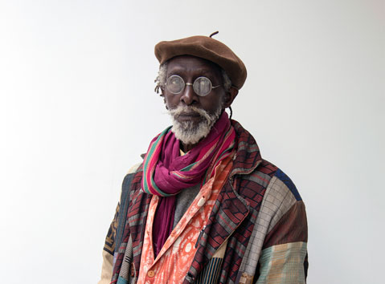

Issa Samb
The man who cannot be defined

potraint of issa samb
Issa Samb's Life
Issa Samb was a sculptor, painter, artist, actor, writer and an essenetric personality. He was known by most people, yet remained a mystery to everyone. His work in the art industry was felt not just in Dakar where he is from, but the world at large.
A brief timeline of Issa Samb's life and exhibitions;
- 1945 - born in Dakar, Senegal on december 31.
- 1995 - 'Seven Stories of Modern Art in Africa', Whitechapel Gallery, London, UK
- 2004 - Issa Samb: From the Ethics of Acting to the Empire without Signs – InIVA, London [1]
- 2008 - The Biennale de l’Art Africain Contemporain, Dak’Art, Dakar
- 2010 - A retrospective of his work was held at the National Art Gallery, Dakar
- 2012 - documenta (13), Kassel, Germany
"Meeting Samb, I was struck by how he chose to communicate with me; without speaking. This deliberate strategy of refusing speech, and resisting explanation invites numerous interpretive approaches."
-- Yvette Gresale